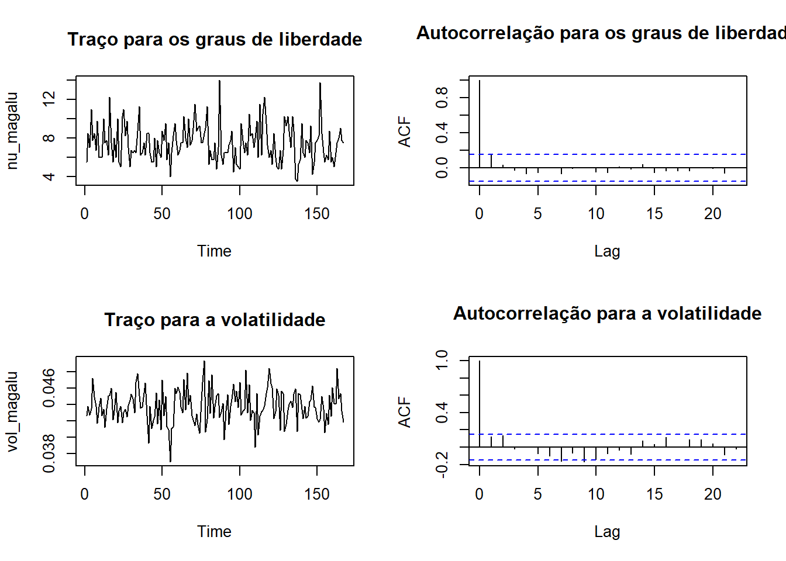
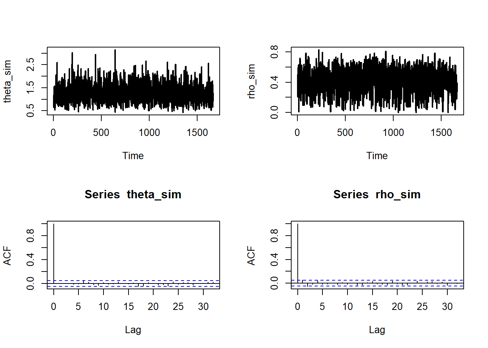

fur <- c(0, 0 ,1,
0, 0, 1, 0, 0, 1, 0, 0, 2, 2,
0, 0, 1, 1, 3, 4, 0, 0, 2, 0,
0, 0, 0)11 Misturas de distribuições
Dizemos que \(X\sim f(.)\) é uma mistura se existe uma variável \(Z\) tal que
\[f(x)=\int f(x|z)f(z)dz.\]
A variável \(Z\) é denominada latente e a função \(f(x,z)\) é denominada modelo aumentado.
Seja \((X_1,Z_1),\ldots,(X_n,Y_n)\) uma amostra aleatória do modelo aumentado \(f(x,z|\theta)\) e seja \(\pi(\theta)\) a priori para \(\theta\). Existem situações nas quais é mais fácil simular do modelo \[\pi(\theta,\boldsymbol{z}|\boldsymbol{x})\varpropto f(\boldsymbol{x},\boldsymbol{z}|\theta)\pi(\theta).\]
A distribuição de \(\theta\) (ou \(\boldsymbol{Z}\)) dado as demais variáveis do modelo é denominada condicional completa, que neste problema são:
\[f(\boldsymbol{z}|\boldsymbol{x},\theta)\] e \[\pi(\theta|\boldsymbol{z},\boldsymbol{x},\theta)\]
Em particular, se é fácil simular das condicionais completas, podemos utilizar o Amostrador de Gibbs, que consiste no seguinte algoritmo:
Amostrador de Gibbs
Inicie a cadeia com fazendo \(j=0\) e escolhendo \(\theta^{(0)}\)
No \(j\)-ésimo passo:
Simule \(\boldsymbol{z^{(j)}}\sim f(\boldsymbol{z}|\boldsymbol{x},\theta^{(j-1)})\)
Simule \(\theta^{(j)}\sim \pi(\theta|\boldsymbol{z},\boldsymbol{x})\)
O Amostrador de Gibbs é uma cadeia de Markov cuja distribuição estacionária é \(\pi(\theta,\boldsymbol{z}|\boldsymbol{x})\)
11.1 Modelos com inflação de zeros
Quando são observados mais zeros do que o esperado pelo modelo de contagem assumido para a verossimilhança, é usual considerar um modelo com inflação de zeros. Nesse tipo de modelo, assumimos que existe uma variável \(Z|p\sim\hbox{Bernoulli}(\rho)\) tal que:
\[X=\left\{\begin{array}{ll}0, & \hbox{se }Z=1\ \\ Y,&\hbox{se }Z=0\end{array}\right.\] onde \(Y\sim h(.|\theta)\) é o modelo de contagem. Apenas \(X\) é observado e, como
\[\begin{align}P(X=0|\theta,p)&=P(X=0|Z=0,\theta)P(Z=0|\rho)+P(X=0|Z=1,\theta)P(Z=1|\rho)\\&=(1-\rho)h(0|\theta)+\rho\end{align}\] a probabilidade de observar um zero está entre \(h(0|\theta)\) e 1, o que caracteriza a inflação.
Agora, considere um modelo inflacionado de zeros aumentado:
\[f(x,z|\theta,\rho)=f(x|z,\theta)f(z|\rho)=f(x|z,\theta)\rho^z(1-\rho)^{1-z}.\] Note que
\[f(x|z,\theta)=\left\{ \begin{array}{ll} h(x|\theta),&\hbox{ se }z=0,\\ I(x=0),&\hbox{ se }z=1\\ \end{array}\right.\] logo, a distribuição conjunta \(f(x,z|\theta,\rho)\) é dada por
\[\begin{array}{c|cc}\hline & x=0 & \hbox{qualquer }x> 0 \\ \hline z=0 & h(0|\theta)(1-\rho) & h(x|\theta)(1-\rho) \\ z=1 & \rho & 0 \\ \hline \end{array} \] Então,
\[\begin{align} \prod_{i=1}^n f(x_i,z_i|\theta,\rho)&=\prod_{i=1}^n [h(0|\theta)(1-\rho)]^{I(x_i=0,z_i=0)}[h(x_i|\theta)(1-\rho)]^{I(x_i>0,z_i=0)}\rho^{I(x_i=0,z_i=1)}\\ &=\prod_{i=1}^n [h(x_i|\theta)(1-\rho)]^{I(z_i=0)}\rho^{I(x_i=0,z_i=1)}\\ &=\prod_{i=1}^n(1-\rho)^{I(z_i=0)}\rho^{I(x_i=0,z_i=1)}\prod_{i=1}^n [h(x_i|\theta)]^{I(z_i=0)}\end{align}\] e, notando que \(I(z_i=0)=1-z_i,\)
\[\begin{align} \prod_{i=1}^n f(x_i,z_i|\theta,\rho)&= (1-\rho)^{n-\sum_{i=1}^n z_i}\rho^{\sum_{i=1}^n z_iI(x_i=0)}\prod_{i=1}^n [h(x_i|\theta)]^{1-z_i}\end{align}\]
Considere, a priori, que \(\theta\) e \(\rho\) são independentes. Seja \(\pi(\theta)\) a priori para \(\theta\) e considere que \(\rho\sim\hbox{Beta}(a,b)\). Então, as condicionais completas para \(\theta\) e \(\rho\) são
\[\begin{align} \pi(\theta|\rho,\boldsymbol{z},\boldsymbol{x})&\propto \prod_{i=1}^n h(x_i|\theta)^{1-z_i}\pi(\theta),\\ \pi(\rho|\theta,\boldsymbol{z},\boldsymbol{x})&\propto \rho^{\sum_{i=1}^n z_iI(x_i=0)+a-1}(1-\rho)^{n-\sum_{i=1}^n z_i+b-1},\\ \end{align}\]
Para a condicional completa de \(z_i\), notemos que \[P(Z_i=1|x_i>0)=\frac{P(Z_i=1,X_i>0)}{P(X_i>0)}=0,\] e que
\[P(Z_i=z|x_i=0)= \left\{\begin{array}{ll}\frac{P(Z_i=0,X_i=0)}{P(X_i=0)}=\frac{h(0|\theta)(1-\rho)}{\rho+(1-\rho)h(0|\theta)},&,z=0\\ \frac{P(Z_i=1,X_i=0)}{P(X_i=0)}=\frac{\rho}{\rho+(1-\rho)h(0|\theta)},&z=1\end{array}\right.,\] logo \[\pi(z_i|\theta,\rho,\boldsymbol{x},\boldsymbol{z}_{(-i)})=\left\{\begin{array}{ll}\hbox{Bernoulli}\left( \frac{\rho}{\rho+(1-\rho)h(0|\theta)}\right),&\hbox{ se }x_i=0\\ I(z_i=0),&\hbox{ se } x_i>0\\ \end{array}\right.\]
Portanto, um amostrador de Gibbs para um modelo inflacionado de zeros é
Amostrador de Gibbs para o modelo inflado de zeros
Faça \(j=0\) e dê os valores iniciais \(\theta^{(0)}\) e \(\rho^{(0)}\).
No \(j\)-ésimo passo:
Para \(i\in\{1,\ldots,n\}\), se \(x_i>0\) faça \(z_i=0\). Senão, simule \[z_i^{(j)}\sim \hbox{Bernoulli}\left(\frac{\rho^{(j-1)}}{\rho^{(j-1)}+(1-\rho^{(j-1)})h(x_i|\theta^{(j-1)})}\right)\]
Simule \(\rho^{(j)}\sim\hbox{Beta}(a+\sum_{i=1}^n z_i^{(j)}I(x_i=0),b+n-\sum_{i=1}^n z_i^{(j)})\)
Simule \(\theta^{(j)}\) de \[\pi(\theta|\rho^{(j)},\boldsymbol{z}^{(j)},\boldsymbol{x})\propto \prod_{i=1}^n h(x_i|\theta^{(j)})^{1-z_i^{(j)}}\pi(\theta^{(j)}).\]
Exemplo - A Poisson inflada de zeros
Neste exemplo, vamos considerar que a distribuição da contagem é Poisson(\(\theta\)) e que \(\theta\sim\hbox{Gama}(r,s)\). Então,
\[\begin{align} \pi(\theta|\rho^{(j)},\boldsymbol{z}^{(j)},\boldsymbol{x})&\propto \prod_{i=1}^{n} h(x_{i} | \theta )^{ 1-z_{i}^{(j)} }\pi(\theta)= \prod_{i=1}^{n} \left[\frac{ e^{-\theta}\theta^{x_i} }{x_i!}\right]^{1-z_{i}^{(j)}}\frac{s^r}{\Gamma(r)}\theta^{r-1} e^{-s\theta}\\&\propto \theta^{\sum_{i=1}^n x_i(1-z_i^{(j)})+r-1}e^{-(n-\sum_{i=1}^n z_i^{(j)}+s)\theta} \end{align},\]
ou seja, \(\theta^{(j)}|\rho^{(j)},\boldsymbol{z}^{(j)},\boldsymbol{x}\sim\hbox{Gama}(\sum_{i=1}^n x_i(1-z_i^{(j)})+r,n-\sum_{i=1}^n z_i^{(j)}+s)\)
Os dados abaixo representam o número anual de furacões atlânticos grandes (categoria 4 ou 5) entre 1987 e 2012, nos Estados Unidos.
A frequência relativa de zeros é 0,58. Considerando o modelo Poisson\((\theta)\) com \(\pi(\theta)\propto \theta^{-1}\), temos que
r1 <- sum(fur)
s1 <- length(fur)
plot(table(fur)/s1, type= 'p', xlab='No. anual de mortes pod fur', ylab = 'Probabilidade', col = 'cyan3', pch=16)
lines(0:4,table(fur)/s1, col = 'cyan3')
points(0:4, dnbinom(0:4, size = r1, prob = s1/(1+s1)), pch=16, col = 'brown')
lines(0:4, dnbinom(0:4, size = r1, prob = s1/(1+s1)), col = 'brown')
legend('bottomleft',c('Freq. relativa','Pred. post. Poisson'), fill=c('cyan3','brown'), bty='n')
# hiperparâmetros para rho
a = b = 1
# hiperparâmetros para theta
r=.1
s=.1
# tamanho da amostra
n <- length(fur)
# valores iniciais da cadeia
theta <- mean(fur)
rho <- mean(fur == 0)
# amostrador de Gibbs
B <- 50000
for(i in 1:B){
# simulando z
z <- NULL
prob <- rho[i]/ ( (1-rho[i])*dpois(0,theta[i]) + rho[i])
for(j in 1:n){
if(fur[j] >0){ z[j] <- 0} else{
z[j] <- rbinom(1,1,prob)
}
}
# simulando rho
rho[i+1] <- rbeta( 1, a + sum( z * (fur == 0)) , n- sum(z)+ b )
# simulando theta
theta[i+1] <- rgamma(1, sum( fur*(1-z) ) + r, n - sum(z) + s)
}Vamos descartar a metade das simulações e usar um thinning igual a 15:
theta_sim <- theta[seq(B/2,B,15)]
rho_sim <- rho[seq(B/2,B,15)]
oo <- par(mfrow=c(2,2))
ts.plot(theta_sim, lwd = 2)
ts.plot(rho_sim, lwd = 2)
acf(theta_sim)
acf(rho_sim)
Vamos estimar as probabilidade de ocorrerem \(k\) mortes via preditiva posteriori:
# tamanho do vetor simulado
Bs <- length(theta_sim)
x_til <- array( NA_real_, c(Bs,n))
for(j in 1:Bs){
z <- rbinom( n, 1, rho_sim[j])
x_til[j,] <- (1-z)*rpois(n, theta_sim[j])
}
# probabilidades estimadas via ZIP
p_zip <- prop.table(table(x_til))
p_zipx_til
0 1 2 3 4 5
6.073093e-01 2.012828e-01 1.165382e-01 5.011305e-02 1.746574e-02 5.421993e-03
6 7 8 9
1.453555e-03 3.230123e-04 6.921693e-05 2.307231e-05 Abaixo mostramos as probabilidades preditas do modelo ZIP, do modelo Poisson a e frequência relativa.
r1 <- sum(fur)
s1 <- length(fur)
plot(table(fur)/s1, type= 'p', xlab='No. anual de mortes pod fur', ylab = 'Probabilidade', col = 'cyan3', pch=16)
lines(0:4,table(fur)/s1, col = 'cyan3')
points(0:4, dnbinom(0:4, size = r1, prob = s1/(1+s1)), pch=16, col = 'brown')
lines(0:4, dnbinom(0:4, size = r1, prob = s1/(1+s1)), col = 'brown')
points(names(p_zip),p_zip, pch=16,col = 'magenta')
lines(names(p_zip),p_zip,col = 'magenta')
legend('bottomleft',c('Freq. relativa','Pred. post. Poisson', 'Pred. post. ZIP'), fill=c('cyan3','brown', 'magenta'), bty='n')
11.1.1 Exercício
Abaixo, segue o número anual de tornados em Lafayette Parish, Louisiana, entre 1950 e 2012.
tor <- c(0, 0,0, 1, 0, 0, 0, 1, 0, 0,
1, 0, 0, 0, 1, 1, 0, 0, 0, 2,
0, 0, 0, 0, 1, 3, 0, 2, 1, 0,
1, 0, 0, 1, 0, 1, 0, 0, 2, 1,
0, 1, 2, 0, 0, 1, 0, 1, 2, 0,
0, 0, 3, 0, 2, 0, 1, 1, 3, 0,
1, 1, 1)Ajuste o modelo Poisson.
Ajuste o modelo Poisson inflado de zeros.
11.2 Mistura escalonada de normais
11.3 Misturas finitas com número
Dizemos que \(X|\boldsymbol{\theta},\boldsymbol{p},\kappa\) é um modelo de mistura finito se sua função de densidade/probabilidade é dada por
\[f(x| \boldsymbol{\theta},\boldsymbol{p} ,\kappa )=\sum_{k=1}^\kappa p_k f_k(x|\boldsymbol{\theta}_k).\]
Cada função \(f(.|\boldsymbol{\theta}_k)\) é denominada componente da mistura e o número de componentes pode ser desconhecido.
Assim como o modelo com zeros inflacionados, podemos utilizar uma variável latente \(\textbf{z}_i|\kappa=(z_{i,1},\ldots,z_{i,\kappa})\sim\hbox{Multinomial}(p_1\ldots,p_\kappa|\sum_{k=1}^\kappa z_{ik}=1)\), obtendo o seguinte modelo aumentado
\[f(x_i|\boldsymbol{\theta},\textbf{z}_i,\kappa)=\prod_{k=1}^\kappa \left[f\left(x_i|\boldsymbol{\theta}_k\right)\right]^{z_{i,k}}\]
A função de verossimilhança aumentada para este modelo é
\[\prod_{i=1}^n f(x_i|\boldsymbol{\theta},\textbf{z}_i,\kappa)=\prod_{i=1}^n\prod_{k=1}^\kappa \left[f\left(x_i|\boldsymbol{\theta}_k\right)\right]^{z_{i,k}}.\]
Considere as prioris \(\pi(\boldsymbol{\theta}|\kappa)=\prod_{k=1}^\kappa \pi(\boldsymbol{\theta}_k)\) e \(\textbf{p}|\kappa\sim\hbox{Dirichlet}(a_1,\ldots,a_\kappa)\), onde \[f(\textbf{p}|\kappa)\propto \prod_{k=1}^\kappa p_k^{a_k-1}\] com \(\sum_{k=1}^\kappa p_k=1\). As condicionais completas para este problema são
\(\begin{align}f(\boldsymbol{\theta}_k|resto)\propto \prod_{i:z_{i,k}=1}f(x_i|\boldsymbol{\theta}_k)\pi(\boldsymbol{\theta}_k)\end{align}\)
\(\begin{align}f(\textbf{z}_i|resto)\propto \prod_{k=1}^\kappa \left[p_kf(x_i|\boldsymbol{\theta}_k)\right]^{z_{i,k}}\end{align}\) ou seja, \(\textbf{z}_i|rest\sim\hbox{Multinomial}(\tilde{p}_1,\ldots,\tilde{p}_\kappa)\), onde
\[\tilde{p}_k=\frac{p_kf(x_i|\boldsymbol{\theta}_k)}{\sum_{k=1}^\kappa p_kf(x_i|\boldsymbol{\theta}_k)}\] * \(f(\textbf{p}|resto)\propto \prod_{k=1}^\kappa p_k^{\sum_{i=1}^n z_{i,k}+a_k-1}\), ou seja \(\textbf{p}|resto\sim\hbox{Dirichlet}(a_1+\sum_{i=1}^n z_{i,1},\ldots,a_\kappa+\sum_{i=1}^n z_{i,\kappa})\)
Se necessário, podemos atrbuir a priori \[\pi(\kappa)=\frac{1}{M},\kappa=1,2,\ldots,M\] para obter a condicional completa \[\pi(\kappa|resto)=\frac{\prod_{i=1}^n\prod_{k=1}^\kappa f(x_i|\boldsymbol{\theta}_k)^{z_{i,k}}\pi(\boldsymbol{\theta}_k)\pi(\textbf{p}|\kappa)\pi(\textbf{z}_i|\kappa)}{\sum_{\kappa=1}^M \prod_{i=1}^n\prod_{k=1}^\kappa f(x_i|\boldsymbol{\theta}_k)^{z_{i,k}}\pi(\boldsymbol{\theta}_k)\pi(\textbf{p}|\kappa)\pi(\textbf{z}_i|\kappa)},\kappa=1,\ldots,M.\]
11.3.1 O velho fiel
O banco de dados faithful mostra a duração e o tempo até a próxima erupção do geiser Velho Fiel, no parque Yellowstone. Abaixo mostramos o diagrama do tempo de espera entre erupções
hist(faithful$waiting)É possível notar classes, uma com tempo e entre erupções menor que 70 com tempo maior. Temos as seguintes estimativas iniciais:
## elementos na classe 1
x <- faithful$waiting
z <- x < 70
# proporção na classe 1
mean(z)[1] 0.3786765# média e desvio padrão na classe 1
mean( x[z])[1] 55.15534sd( x[z])[1] 6.266558## elementos na classe 2
# proporção na classe 2
mean(z==F)[1] 0.6213235# média e desvio padrão na classe 2
mean( x[z==F])[1] 80.49112sd( x[z==F])[1] 5.456667Vamos considerar que as duas componentes possuem distribuição normal. Para cada componente, teremos as seguintes prioris:
\[\pi(\mu_i,\phi_i)=\frac{\phi^{1/2}_i}{\sqrt{2\pi C}}e^{-\frac{\phi_i}{2C}(\mu_i-m_i)^2}\frac{b^a}{\Gamma(a)}\phi_i^{a-1}e^{b\phi_i},\]
\[p\sim\hbox{Beta}(r,s)\]
\[z_i\sim\hbox{Bernoulli}(p)\]
O modelo aumentado é \[f(x_i|\mu,\phi,z_{i})=\left[\frac{\phi_1^{1/2}}{\sqrt{2\pi}}e^{-\frac{\phi_1}{2}(x_i-\mu_1)}\right]^{z_i}\left[\frac{\phi_2^{1/2}}{\sqrt{2\pi}}e^{-\frac{\phi_2}{2}(x_i-\mu_2)}\right]^{1-z_i}\] As condicionais completas são:
\[\begin{align}f(\mu_1|resto) &\propto \exp\left\{-\frac{\phi_1}{2}\sum_{i=1}^n z_i(x_i-\mu_1)^2\right\}\exp\left\{-\frac{\phi_1}{2C} z_i(\mu_1-m_1)^2\right\}\\&\propto \exp\left\{-\frac{\phi_1}{2}\left(\sum_{i=1}^n z_i+C^{-1}\right) \left(\mu_1-\frac{\sum_{i=1}^{n}x_iz_i+m_1C^{-1}}{\sum_{i=1}^n z_i+C^{-1}}\right)^2\right\}\end{align}\]
\[\begin{align}f(\mu_2|resto) &\propto \exp\left\{-\frac{\phi_2}{2}\sum_{i=1}^n (1-z_i)(x_i-\mu_2)^2\right\}\exp\left\{-\frac{\phi_2}{2C} (1-z_i)(\mu_2-m_2)^2\right\}\\&\propto \exp\left\{-\frac{\phi_2}{2}\left(\sum_{i=1}^n (1-z_i)+C^{-1}\right) \left(\mu_2-\frac{\sum_{i=1}^{n}x_i(1-z_i)+m_1C^{-1}}{\sum_{i=1}^n (1-z_i)+C^{-1}}\right)^2\right\}\end{align}\]
\[\begin{align}f(\phi_2|resto)&\propto \phi_2^{-\frac{1}{2}\sum_{i=1}^{n}z_i} e^{-\frac{\phi_2}{2}\sum_{i=1}^n (1-z_i)(x_i-\mu_2)^2}\phi^{-1/2}_2e^{-\frac{\phi_2}{2}(\mu_2-m_2)^2}\phi_2^{a/2-1}e^{-\phi_2 b/2}\\ &\propto \phi_2^{\frac{1}{2}(1+a+\sum_{i=1}^{n}(1-z_i)-1}e^{-\frac{\phi_2}{2}[\sum_{i=1}^n(1-z_i)(x_i-\mu_2)^2 +(\mu_2-m_2)^2 + b]}\end{align}\] \[\begin{align}f(\phi_1|resto)&\propto \phi^{-\frac{1}{2}\sum_{i=1}^{n}z_i} e^{-\frac{\phi_1}{2}\sum_{i=1}^n z_i(x_i-\mu_1)^2}\phi^{-1/2}e^{-\frac{\phi_1}{2}(\mu_1-m_1)^2}\phi_1^{a/2-1}e^{-\phi_1 b/2}\\ &\propto \phi_1^{\frac{1}{2}(1+a+\sum_{i=1}^{n}z_i)-1}e^{-\frac{\phi_1}{2}[\sum_{i=1}^nz_i(x_i-\mu_1)^2 +(\mu_1-m_1)^2 + b]}\end{align}\]
\[\begin{align}f(p|resto)\propto \prod_{i=1}^n p^{z_i}(1-p)^{1-z_i}p^{r-1}(1-p)^{s-1}\propto p^{r+\sum_{i=1}^n z_i-1}(1-p)^{s+\sum_{i=1}^n (1-z_i)-1}\end{align}\]
\[f(z_i|resto)\propto\left[ p\frac{\phi_1^{1/2}}{\sqrt{2\pi}}e^{-\frac{\phi_1}{2}(x_i-\mu_1)^2}\right]^{z_i}\left[ (1-p)\frac{\phi_2^{1/2}}{\sqrt{2\pi}}e^{-\frac{\phi_2}{2}(x_i-\mu_2)^2}\right]^{1-z_i}\]
Abaixo implementamos o amostrador de Gibbs
B <- 50000
# hiperparmametros
m1 <- 65
m2 <- 80
C <- 1000
r= 4; s = 6
a = 1; b = .1
# valores iniciais
z <- x < 70
phi1 <- 1/36
phi2 <- 1/25
mu1 = mu2 = p = NULL
for(i in 1:B){
# mu dado o resto
m1_post <- ( sum(x*z) + m1/C) / ( sum(z) + 1/C )
m2_post <- ( sum(x*(1-z)) + m1/C) / ( sum(1-z) + 1/C )
s1_post <- 1 / ( ( sum(z) + 1/C )*phi1[i] )
s2_post <- 1 / ( ( sum(1-z) + 1/C )*phi2[i] )
mu1[i+1] <- rnorm(1, m1_post, sqrt( s1_post) )
mu2[i+1] <- rnorm(1, m2_post, sqrt( s2_post) )
# phi dado resto
phi1[i+1] <- rgamma(1, 1 + a + sum(z), sum( z*(x - mu1[i+1])^2 ) + (mu1[i+1]-m1)^2 + b)
phi2[i+1] <- rgamma(1, 1 + a + sum(1-z), sum( (1-z)*(x - mu2[i+1])^2 ) + (mu2[i+1]-m2)^2 + b)
# p dado resto
p[i+1] <- rbeta(1, r + sum(z), s + sum(1-z) )
# z dado resto
aux1 <- p[i+1]*dnorm(x,mu1[i+1], 1/sqrt(phi1[i+1]))
aux2 <- (1-p[i+1])*dnorm(x,mu2[i+1], 1/sqrt(phi2[i+1]))
z <- rbinom(length(x), 1, aux1/( aux1 + aux2))
}
# hist(mu1[seq(B/2,B,30)])
hist(mu2[seq(B/2,B,30)])